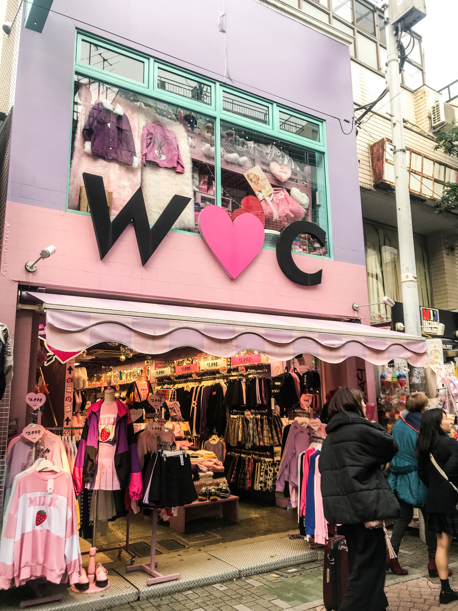

03
竹下通り
TAKESHITA STREET
原宿のトレンド発信地 ♡
TAKESHITA STREET
原宿のトレンド発信地 ♡
竹下通りは、原宿の象徴であり、日本の若者文化・Kawaii文化の発信地です。全長約350mの通りには、カラフルなファッションショップ、フォトジェニックなスイーツ店が軒を連ね、歩くだけでワクワクするエネルギーに満ちています。

カラフルなバルーンアートが目印の入口。記念写真に最適。

原宿クレープの元祖。大行列必至の人気店。

ファッション、雑貨、コスメ、かわいいものが溢れる通り。

巨大なレインボー綿菓子が有名なキャンディショップ。

ロリータ、ゴシック、Kawaiiなど多様なスタイル。

国内外の若者で溢れる活気ある通り。